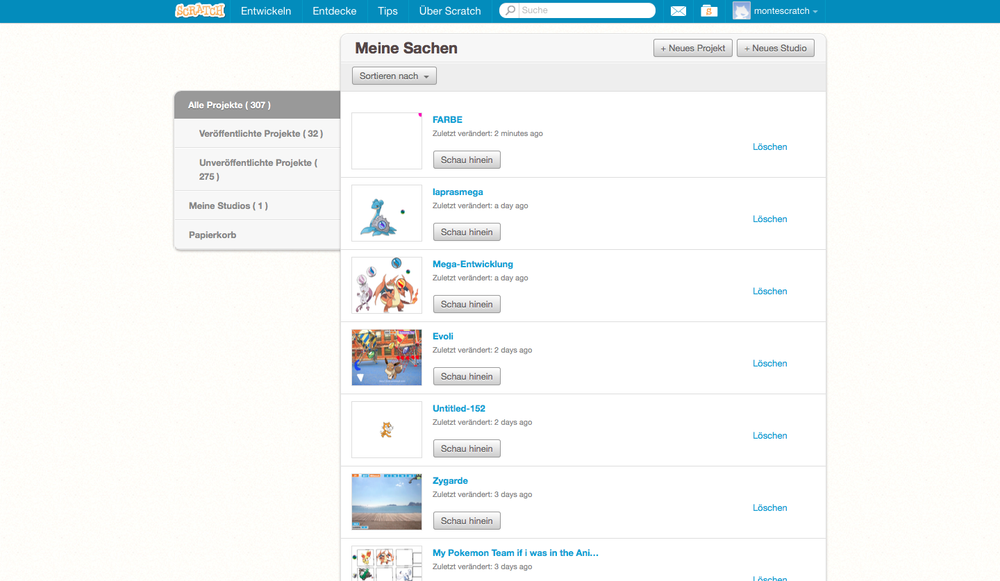

Hallo, Willkommen auf meiner Scratch Webseite. Hier Seht ihr einige Scratch Beispiele, die ihr versuchen koennt nachzubauen.

Beispiel 1: Ein Farbschwamm (Schwierigkeitsstufe: Leicht).
Beispiel 2: Eine spannende Verwandlung. (Schwierigkeitsstufe: Mittel).
Beispiel 3: Eine Zellenformation. (Schwierigkeitsstufe: Schwer)
Beispiel 4: Verschiedene Entwicklungen. (Schwierigkeitsstufe: Extrem Schwer)
Viel Spass dabei!
Von JJ
Tipp: Alle meine Beispiele sind mit Pokemon.